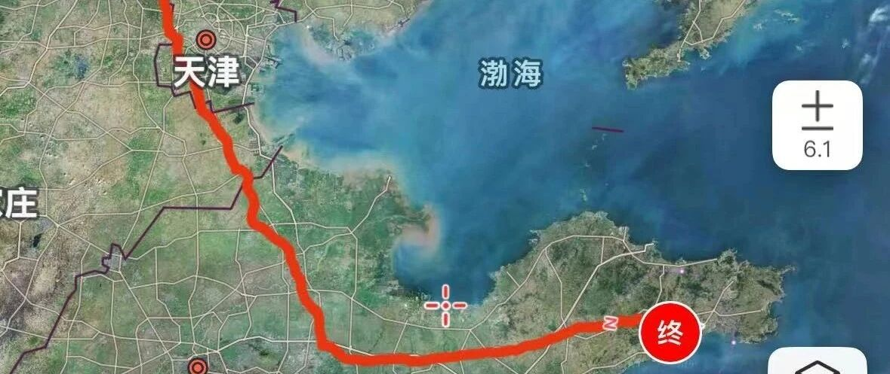

财务自由后从北京骑到威海过夏天！(第十一天)
点击关注 秋秋在分享
一起实现财务自由退休
大家好，我是秋秋呀！
FIRE提前退休后，我们决定全国旅居一下。
第一站:从北京骑行800km到威海，过夏天！
今天是第11天，已经骑到威海了！现在就躺在酒店里写文章。


这一路上我可是见证太多了！
有种从前车马慢，舟车劳顿所以印象更深刻的感觉。
从北京骑车到山东，我最大的感触还是区域发展差距太大。
比如有的城市，连锁酒店都很少，大型商超也没几个，有的就吃喝玩乐一应俱全。
我们是在淄博吃完烧烤，就骑向潍坊去吃肉火烧。

这种火烧我很爱吃，外面很酥里头馅足，有种小时候的味道，配豆腐脑地道～
这一套才5块钱，真的太值了！


潍坊好吃的还有芥末鸡 和乐！
芥末鸡有点呛鼻子，和乐里面一堆肉很好吃。这一份各是15块钱，说实话30块钱在北京吃兰州拉面，也放不了几块肉片。
这里可以选择的就太多了。


我觉得潍坊在山东挺低调的，实际上发展很好，吃喝玩乐的地方都挺多！
我们还去逛了风筝博物馆，路过一家小店老板人很好。
买了一个超级大风筝加线才25块钱，我们惊叹好便宜，老板说本来就不贵啊！
那种风筝小摆件才10块钱，我们住的酒店大堂也有出售的，就是35块钱了，我和老王相视一笑，这才是正常的价格。


接着我们骑车到了青岛。
潍坊市区到青岛平度导航都不用，一条大直道。不过平度的发展就一般了，玩的地方不是特别多。
我还一直觉得整个青岛都很富裕，实际上从gdp来看，不沿海的区域发展就没那么好。
gdp过千亿的市区并没有很多。


继续往东骑就是烟台了。
一路上都是卖大樱桃的，有好多品种。
阿姨知道我从北京骑车过来的，一直赞叹，又给我好几把樱桃吃。
我知道黄色的这种叫黄蜜，虽然小却很甜。像车厘子的这种深红色的是脆甜。

我买了一斤，才20块钱，后面还有卖15块钱两斤的，真是实现樱桃自由了。
骑车到酒店下午就是出去吃个饭，这个炒鸡还挺好吃的：

当然早餐也不错，我俩每天都吃的很开心。
尤其是在烟台，面条里有只大虾，吃起来弹牙，确实这边海鲜很好吃！


本来昨天是起了个大早，从烟台莱阳一天就能骑到威海乳山了。
结果又是大风又是下雨。
从烟台开始还有好多坡，我真的都要骑哭了，只能一路推着。


于是我们决定停一下，只骑了30公里到了海阳住下。
提前退休的好处就是，不用赶时间！
慢慢来的感觉真好。
我觉得骑车有时候和人生一样。
在路不好走的时候，你不能急，否则链条会崩。
慢慢来，急，容易出错。
而顺势而为的时候，也要走的更远一点。
接着就在酒店休息吃早餐了～

今天状态很好，继续赶路！已经骑到威海乳山了～
乳山还挺特别的，房价很低，差不多5-10万就能买一套海景房。
说是山东版"鹤岗"一点不过分，租房一个月才三四百块钱。
我俩打算今天考察一下。
从4.30号到今天5.10号，我俩已经骑了788公里，11天了。
预计明天能骑到文登区或者荣成市，骑行就结束啦！

这一路上最想说的是青春真好！
健康的体魄和自由的灵魂，是人生的宝藏。
提前退休旅居威海的考察我也会继续更新的，记得关注哦！